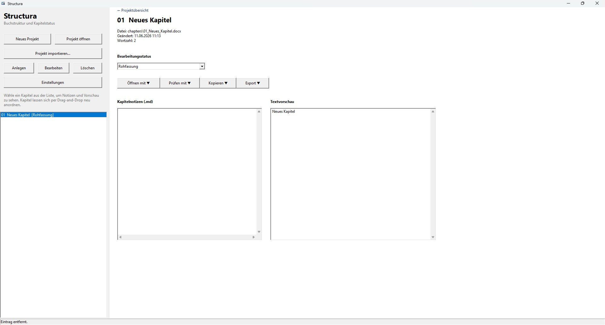
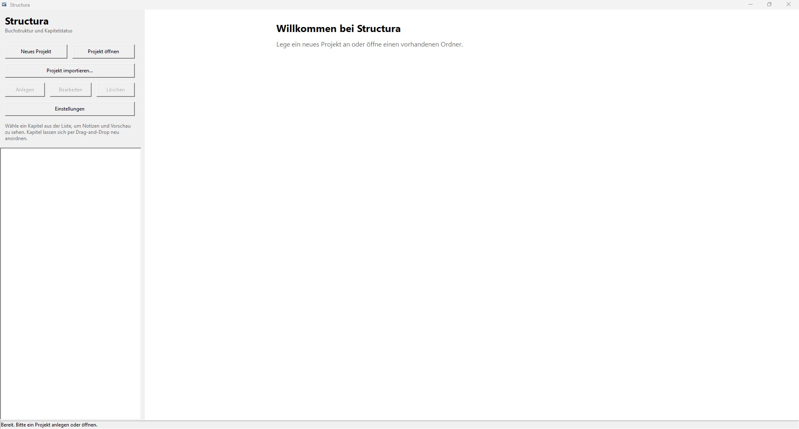

Wofür Structura gedacht ist
Kapitel im Griff
Kapitel und Teil-Trenner anlegen, per Drag-and-Drop neu ordnen – die Struktur bleibt jederzeit sichtbar.
Status & Fortschritt
Jedes Kapitel hat einen Status. Wortzahl und Normseiten zeigen, wie weit das Manuskript ist.
Notizen als Markdown
Projekt- und Kapitelnotizen liegen als schlichte Markdown-Dateien – lesbar auch ohne die App.
Mit deinem Editor
Kapitel öffnen in Word, LibreOffice oder TextMaker. Structura bearbeitet die DOCX nicht selbst.
Text-Vorschau
Eine schnelle Vorschau des Kapiteltexts aus der DOCX – ohne ein Office-Programm starten zu müssen.
Export
Alle Kapitel zu einem Gesamtdokument zusammenführen, wenn das Manuskript steht.
Deine Dateien bleiben deine Dateien
Jedes Projekt ist ein ganz normaler Ordner auf der Festplatte: structura.json für die
Struktur, chapters/ für die Kapitel, notes/ für Notizen, dazu
backup/, preview/ und export/. Kein Cloud-Zwang, kein
Datenbankformat, nichts, das dich einsperrt – auch ohne Structura bleibt alles lesbar.

Was Structura ist
- ein lokales Cockpit für kapitelbasierte Buchprojekte
- ein dateibasierter Organizer, der außerhalb der App lesbar bleibt
- ein Begleiter zu Word, LibreOffice oder TextMaker
Was Structura nicht ist
- kein DOCX-Editor
- kein Cloud-Sync-Dienst
- keine Mehrbenutzer-Plattform
- kein pixelgenauer DOCX/PDF-Renderer
Loslegen
Auf der Releases-Seite die aktuelle
Structura-vX.X.X-windows-x64.zip laden, irgendwo entpacken,
Structura.exe starten. Kein Installer.
Hinweis zu Windows SmartScreen: Da Structura nicht kommerziell signiert ist, kann beim ersten Start eine Warnung erscheinen. Über Weitere Informationen → Trotzdem ausführen startest du die App. Der Quellcode liegt vollständig offen, falls du prüfen möchtest, was du ausführst.